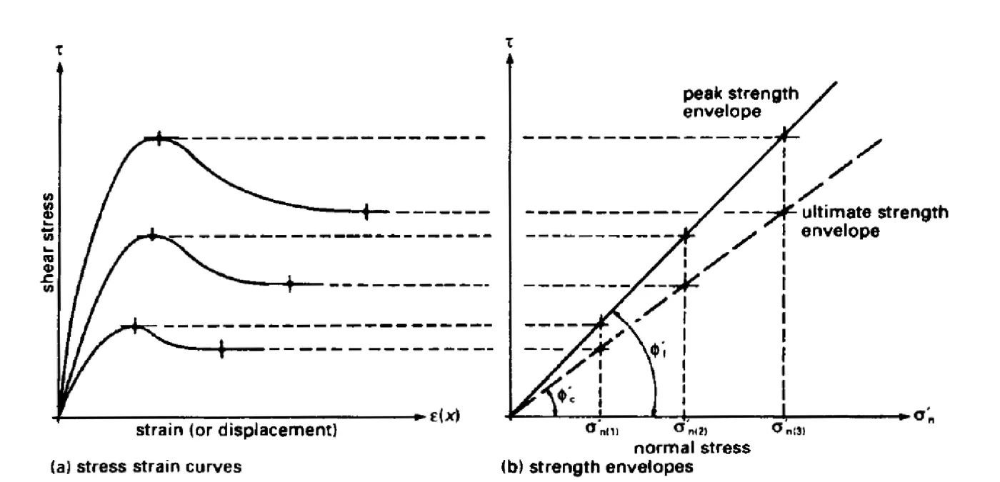
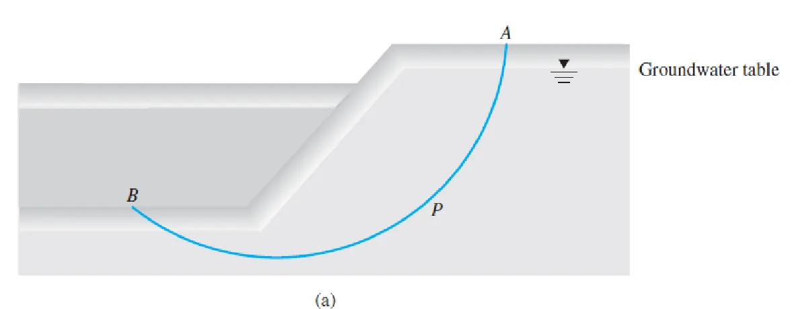

Resistencia al cortante de los suelos#
Importante
Objetivos de aprendizaje
Enunciar el criterio de falla de Mohr-Coulomb en esfuerzos totales y efectivos.
Explicar el origen físico de la cohesión y la fricción, y los fenómenos de dilatancia y contractancia.
Diferenciar la resistencia pico, la resistencia en estado crítico y la residual.
Interpretar los ensayos de corte directo, triaxial (CD, CU y UU) y de compresión inconfinada.
Seleccionar los parámetros de resistencia según las condiciones de drenaje del problema.
La resistencia al corte#
Los suelos fallan por cizalla. La resistencia al corte movilizada es lo que mantiene estable un talud, lo que soporta una cimentación y lo que limita el empuje sobre un muro. Cuando los esfuerzos cortantes inducidos superan la resistencia disponible a lo largo de una superficie, se produce la ruptura. Esta puede ser frágil, por deslizamiento súbito sobre una superficie, con una falla catastrófica, o dúctil, por plastificación, con acumulación de grandes deformaciones sin una superficie definida.
Los criterios de falla pueden expresarse de manera dinámica, en términos de los esfuerzos que la producen, o cinemática, en términos de las deformaciones. En la práctica geotécnica se usan los primeros.
El criterio de Mohr-Coulomb#
Coulomb (1776) postuló que la máxima resistencia al corte en el plano de falla tiene una componente de cohesión y otra de fricción proporcional al esfuerzo normal:
Mohr (1900) afirmó que un material falla por una combinación crítica de esfuerzo normal y cortante sobre un plano, y no por el valor máximo de uno de ellos. La envolvente de falla es en general curva, pero en el rango de esfuerzos de la mayoría de los problemas se aproxima a la recta de Coulomb. La combinación de ambas ideas es el criterio de Mohr-Coulomb.
La relación de Coulomb es empírica, y solo fue eficaz cuando Terzaghi formuló el principio de esfuerzo efectivo. Como el agua no soporta esfuerzo cortante, la resistencia depende de los esfuerzos que soporta el esqueleto del suelo:
Cuanto mayor es el esfuerzo efectivo normal sobre un plano, mayor es su resistencia al corte. Por eso un aumento de la presión de poros, sin ningún cambio en las cargas, puede llevar el suelo a la falla.

Figura 45 Criterio de falla de Mohr-Coulomb. Fuente: Holtz y Kovacs (1981).#
Mohr-Coulomb en términos de esfuerzos principales#
Un elemento no falla mientras su círculo de Mohr esté por debajo de la envolvente; la falla ocurre cuando el círculo la toca. Inicialmente, en un estado isotrópico, el círculo es un punto; al aumentar la carga crece hasta tocar la envolvente. De la geometría del círculo tangente se obtiene:
y el plano de falla forma un ángulo \(\theta_f=45°+\phi'/2\) con el plano sobre el que actúa el esfuerzo principal mayor.
Esfuerzos totales y efectivos#
Como la presión de poros actúa con igual intensidad en todas las direcciones, el círculo de Mohr en esfuerzos efectivos tiene el mismo diámetro que el de esfuerzos totales y está desplazado una distancia \(u\) hacia la izquierda. Con presiones de poros positivas, el círculo efectivo se acerca a la envolvente. Este es exactamente el mecanismo de los deslizamientos detonados por lluvia: la carga del talud no cambia, pero el círculo efectivo se desplaza hasta tocar la envolvente.
Origen de la cohesión y de la fricción#
La fricción proviene de la irregularidad de los contactos entre partículas y del trabazón entre ellas. Depende de la mineralogía (el cuarzo y los feldespatos dan ángulos de 30° a 40°, las arcillas esmectíticas pueden dar menos de 10°), de la forma y la angularidad de los granos, de la gradación y de la compacidad. Se han propuesto relaciones empíricas como \(\tan\phi=\alpha/e\), con \(\alpha\) entre 0,325 y 0,6, que expresan que el ángulo de fricción aumenta al disminuir la relación de vacíos.
La cohesión es la resistencia que existe aun cuando el esfuerzo normal es nulo. Su origen puede ser la cementación entre partículas (verdadera cohesión, frecuente en suelos residuales con óxidos de hierro y en suelos derivados de cenizas), las fuerzas electroquímicas entre partículas de arcilla, o la succión en suelos no saturados (cohesión aparente). La cohesión aparente desaparece con la saturación, y la cohesión por cementación puede destruirse con el remoldeo o la meteorización progresiva. Por eso, en el análisis de estabilidad a largo plazo, se suele ser conservador con este parámetro.
Dilatancia y contractancia#
Al ser cortado, un suelo cambia de volumen. Una arena densa o una arcilla fuertemente sobreconsolidada debe dilatarse para que las partículas trabadas pasen unas sobre otras: su curva esfuerzo-deformación presenta un pico y luego desciende. Una arena suelta o una arcilla normalmente consolidada se contrae al cortarse, y su resistencia aumenta gradualmente sin pico. Ambas tienden, con deformaciones grandes, a un mismo estado crítico, en el que el suelo se deforma a volumen y esfuerzo constantes.

Figura 46 Comportamiento de arenas densas (dilatancia) y sueltas (contractancia) en corte.#
Resistencia pico y residual#
En las arcillas sobreconsolidadas y en los suelos con estructura, la resistencia alcanza un pico y luego disminuye con el desplazamiento. Con desplazamientos muy grandes, las partículas laminares de arcilla se orientan paralelas a la superficie de corte y la resistencia cae hasta un valor residual, con \(c_r\approx0\) y \(\phi_r\) que puede ser mucho menor que el ángulo pico. La resistencia residual es la que gobierna la reactivación de deslizamientos antiguos, porque su superficie de falla ya ha sufrido grandes desplazamientos. Identificar en campo un deslizamiento antiguo o un plano de falla con estrías es, por lo tanto, un aporte geológico que cambia completamente los parámetros de diseño.


Figura 47 Envolventes de resistencia pico y residual. Fuente: Whitlow (1983).#
Ensayos de laboratorio#
Los ensayos de resistencia buscan reproducir en una muestra representativa las condiciones de esfuerzo y drenaje del campo. El procedimiento general es tomar una muestra representativa, montarla en el equipo con sus condiciones iniciales y aplicarle los cambios de esfuerzo que experimentará en campo hasta llevarla a la falla.
Corte directo#
La muestra se coloca en una caja partida en dos mitades. Se aplica una carga vertical, se espera la consolidación y luego se desplaza horizontalmente la mitad inferior a velocidad constante, midiendo la fuerza cortante. El ensayo se repite con al menos tres esfuerzos normales, y los pares \((\sigma,\tau_f)\) definen la envolvente. En arcillas el desplazamiento debe ser muy lento para que se disipe la presión de poros. Es un ensayo sencillo, pero impone el plano de falla, no controla el drenaje ni mide la presión de poros, y la distribución de esfuerzos en la muestra no es uniforme. Con inversiones repetidas del desplazamiento, o en el corte anular, permite medir la resistencia residual.

Figura 48 Esquema del ensayo de corte directo.#
Ejemplo resuelto: corte directo
Tres ensayos de corte directo drenados sobre un suelo residual arenoso dieron esfuerzos cortantes de falla de 36, 64 y 92 kPa para esfuerzos normales de 50, 100 y 150 kPa. Determine \(c'\) y \(\phi'\).
Los puntos están alineados. La pendiente es \((92-36)/(150-50)=0{,}56\), de modo que \(\phi'=\tan^{-1}0{,}56=29{,}2°\). La ordenada al origen es \(c'=36-0{,}56\times50=8\) kPa.
En un suelo residual, este intercepto de cohesión puede deberse a cementación o a succión residual en la muestra. Antes de usarlo en un diseño a largo plazo conviene verificar su origen con ensayos saturados.
Ensayo triaxial#
Una muestra cilíndrica envuelta en una membrana de caucho se coloca en una celda llena de agua, que aplica una presión de confinamiento \(\sigma_3\). Luego se aplica un esfuerzo axial adicional, el esfuerzo desviador \(\Delta\sigma_d=\sigma_1-\sigma_3\), hasta la falla. El ensayo controla el drenaje y permite medir la presión de poros. Según las condiciones de drenaje en las dos etapas (consolidación y corte) se distinguen tres tipos:
Ensayo |
Consolidación con \(\sigma_c\) |
Corte con \(\Delta\sigma_d\) |
Parámetros |
|---|---|---|---|
CD (consolidado drenado) |
Drenada |
Drenado, muy lento |
\(c'\), \(\phi'\) |
CU (consolidado no drenado) |
Drenada |
No drenado, se mide \(u\) |
\(c_{cu}\), \(\phi_{cu}\) y \(c'\), \(\phi'\) |
UU (no consolidado no drenado) |
No drenada |
No drenado |
\(c_u\), \(\phi_u=0\) |

Figura 49 Esquema del equipo triaxial.#
Ensayo CD. El drenaje se permite durante todo el ensayo, de modo que \(\Delta u=0\) y los esfuerzos totales son iguales a los efectivos. Las arenas densas y las arcillas OC muestran un pico y dilatancia; las arenas sueltas y las arcillas NC, contracción y ausencia de pico. Con varias presiones de confinamiento se obtiene la envolvente \(c'\), \(\phi'\); en arcillas NC, \(c'=0\). Simula las condiciones de largo plazo: terraplenes construidos muy lentamente, presas con flujo establecido y excavaciones o laderas naturales en arcillas.
Ejemplo resuelto: triaxial CD
Una arcilla normalmente consolidada se ensaya en triaxial CD con \(\sigma_3=100\) kPa y falla con un esfuerzo desviador de 200 kPa. Calcule \(\phi'\) y la orientación del plano de falla.
\(\sigma'_1=100+200=300\) kPa y \(\sigma'_3=100\) kPa. Con \(c'=0\), \(\sin\phi'=(\sigma'_1-\sigma'_3)/(\sigma'_1+\sigma'_3)=200/400=0{,}5\), de modo que \(\phi'=30°\). El plano de falla forma \(45°+30°/2=60°\) con la horizontal.
Ensayo CU. La muestra se consolida con drenaje y se lleva a la falla sin drenaje, midiendo el exceso de presión de poros. Las arenas sueltas y las arcillas NC generan presiones de poros positivas; las arenas densas y las arcillas OC pueden generarlas negativas por dilatancia. Con un solo tipo de ensayo se obtienen la envolvente total y la efectiva:
Se aplica cuando el suelo está consolidado bajo un estado de esfuerzos y luego se cargan esfuerzos adicionales rápidamente: un terraplén construido rápido sobre arcillas ya consolidadas, el desembalse rápido de una presa o un terraplén construido sobre una ladera.
Ensayo UU. No se permite el drenaje en ninguna etapa. En un suelo saturado, el aumento de la presión de celda se transmite íntegramente al agua y el esfuerzo efectivo no cambia; por eso todas las muestras fallan con el mismo esfuerzo desviador, los círculos totales tienen el mismo diámetro y la envolvente total es horizontal:
Simula las condiciones de corto plazo: la construcción rápida de un terraplén sobre arcillas saturadas, las excavaciones rápidas y las cimentaciones construidas rápidamente sobre arcillas.
Parámetros de presión de poros de Skempton#
Skempton (1954) expresó el cambio de presión de poros en condiciones no drenadas en función de los cambios de esfuerzos principales:
El parámetro \(B\) vale 1 en suelos saturados y disminuye rápidamente con la presencia de aire. El parámetro \(A\) refleja la tendencia del suelo a cambiar de volumen en corte. En arcillas NC de alta sensibilidad \(A_f>1\); en arcillas NC de baja sensibilidad está entre 0,5 y 1; en arcillas ligeramente OC entre 0 y 0,5; y en arcillas fuertemente OC entre −0,5 y 0.
Compresión inconfinada#
Es un caso particular del ensayo UU con \(\sigma_3=0\). La muestra se carga axialmente hasta la falla, y la resistencia a la compresión inconfinada \(q_u\) da la resistencia no drenada \(c_u=q_u/2\). Es rápido y económico, pero solo es válido en arcillas saturadas sin fisuras.
¿Qué parámetros usar?#
La elección depende de la velocidad de carga respecto a la velocidad de drenaje del suelo. En suelos granulares, la alta permeabilidad disipa rápidamente las sobrepresiones y la resistencia se analiza en esfuerzos efectivos, con \(\tau_f=\sigma'\tan\phi'\); la cohesión suele ser despreciable. Solo bajo cargas dinámicas, como los sismos, las arenas se comportan sin drenaje y pueden licuarse. En suelos cohesivos se distinguen las condiciones a corto plazo, no drenadas, analizadas en esfuerzos totales con \(c_u\), y las condiciones a largo plazo, drenadas, analizadas en esfuerzos efectivos con \(c'\) y \(\phi'\). En un terraplén sobre arcilla blanda el caso crítico es el corto plazo, porque la arcilla gana resistencia al consolidarse. En una excavación en arcilla el caso crítico es el largo plazo, porque al descargar se generan presiones de poros negativas que se disipan con el tiempo y la resistencia disminuye.


Figura 50 Variación del factor de seguridad con el tiempo en un talud excavado en arcilla.#
Lecturas recomendadas#
Ejercicios#
Una arena densa ensayada en triaxial CD con \(\sigma_3=150\) kPa falla con \(\Delta\sigma_d=450\) kPa. Calcule \(\phi'\) y el esfuerzo normal y cortante sobre el plano de falla.
En un ensayo CU sobre arcilla NC con \(\sigma_c=200\) kPa, la falla se produjo con \(\Delta\sigma_f=150\) kPa y \(\Delta u_f=110\) kPa. Calcule \(\phi_{cu}\), \(\phi'\) y el parámetro \(A_f\).
Explique por qué en un deslizamiento reactivado se deben usar parámetros residuales, y qué evidencias geológicas permiten reconocer un movimiento antiguo.